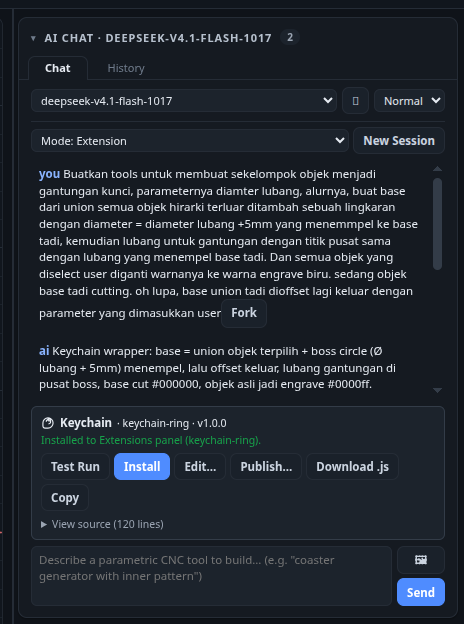

Panel AI Chat
Panel AI Chat ada di bagian atas sidebar kanan dengan dua mode utama: Mode: SVG untuk membuat desain vektor siap potong/engrave, dan Mode: Extension untuk membangun alat generator CNC parametrik baru secara instan. Berjalan dengan konsep bring-your-own-key (BYOK) melalui bridge lokal — tidak ada kunci API yang disimpan di repositori.

Normal), pemilih Mode: SVG / Extension + New Session, tombol Fork di bawah prompt pertama, Panel Testing Extension permanen tepat di atas kotak prompt (Test Run, Install, Edit…, Publish…, Download .js, Copy, View source), serta lampiran gambar (🖼) dan Send.1. Mengaktifkan AI Chat
- Jalankan server MiniSketch:
node server/serve.jslalu bukahttp://127.0.0.1:8090. - Buka Tool ▸ Settings ▸ AI chat dan atur:
- AI bridge URL — kosongkan jika diakses lewat server MiniSketch sendiri, atau isi mis.
http://127.0.0.1:8090. - Google Gemini — centang bila memakai kunci Google Gemini API (Base URL otomatis mengarah ke endpoint resmi Gemini); matikan jika memakai endpoint OpenAI-compatible kustom (DeepSeek, z.ai, Ollama, dll.) di kolom AI API base URL.
- AI API key — kunci API Anda sendiri (klik tombol uji koneksi di Settings untuk memeriksa).
- AI reasoning level — pilih
Off(tercepat/hemat),Low, atauNormal(paling teliti). Dapat diganti cepat langsung dari dropdown di panel AI Chat. - AI agent rounds — batas maksimum putaran agen per permintaan (default
4×).
- AI bridge URL — kosongkan jika diakses lewat server MiniSketch sendiri, atau isi mis.
- Klik Apply di Settings.
- Di panel AI Chat, pilih model lewat dropdown model (klik 🔄 bila daftar belum muncul), pilih mode output (Mode: SVG atau Mode: Extension — pilihan ini otomatis tersimpan di browser walau browser ditutup), ketik perintah, lalu klik Send. Saat respons berjalan, tombol berubah menjadi ■ Stop untuk membatalkan kapan saja.
2. Dua Mode Output AI Chat
Gunakan dropdown Mode tepat di bawah pemilih model untuk berpindah antara dua alur kerja berikut. Pilihan mode tersimpan otomatis di localStorage sehingga tetap sama saat browser dibuka ulang.
A. Mode: SVG (Desain Vektor ke Kanvas)
Cocok untuk membuat gambar, ornamen, papan nama, pola kotak, stensil, atau komponen 2D berukuran milimeter nyata.
- AI menghasilkan kode
<svg>dengan koordinat milimeter (1:1 terhadap kanvas) dan kode warna operasi CNC resmi: Hitam (#000000Cut), Biru (#0000ffEngrave), Merah (#ff0000Mark/Drill/Gores), Cyan (#00ffffV-Carve), Ungu (#800080Pocket), dan Hijau (#00ff00Construction). - Di bawah balasan AI langsung tampil pratinjau visual SVG (klik gambar untuk memperbesar) bersama dua tombol:
- Insert to workspace — mengimpor SVG langsung ke kanvas dalam satu langkah Undo (Ctrl+Z), ditempatkan rapi di sisi kanan atas konten yang sudah ada (+20 mm) agar tidak menumpuk gambar lama. Teks SVG otomatis menjadi objek Teks yang masih bisa diedit.
- Copy SVG — menyalin kode mentah
<svg>ke clipboard.
B. Mode: Extension (AI Extension Builder & Panel Testing)
Cocok saat Anda ingin membuat alat/generator parametrik baru yang bisa dipakai berulang kali (seperti pembuat gantungan kunci, coaster berpola, rak custom, atau pembungkus objek terpilih) tanpa harus menulis kode secara manual.
- AI menghasilkan satu skrip JavaScript tervalidasi untuk
window.MiniSketchTools.register({...})lengkap dengan dialog input parameter, ikon SVG, serta dukungan grup parametrik dan Undo. - Di dalam satu sesi chat, hanya ada satu Panel Testing Extension permanen yang terpasang tetap tepat di atas kotak teks prompt (tidak ikut ter-scroll saat Anda membaca percakapan panjang). Panel ini selalu menampilkan ekstensi terbaru hasil generasi AI pada sesi tersebut, sedangkan balasan chat lama diberi penanda singkat agar riwayat tetap rapi.
| Bagian Panel Testing | Kegunaan |
|---|---|
| Status Validasi | Menampilkan apakah sintaks JS, kontrak API, keamanan ikon SVG, dan ID elemen dialog sudah valid (hijau Ready atau merah Invalid). |
| Test Run | Memuat ekstensi sementara (belum disimpan permanen) dan langsung membuka dialog parameternya agar Anda bisa langsung menguji hasil potongannya di kanvas. |
| Install | Menyimpan ekstensi secara permanen ke browser dan menambahkan tombolnya ke Panel Extensions di sidebar kanan. |
| Edit… | Membuka kode sumber ekstensi ke editor Add / Import milik Extension Manager yang sudah dilengkapi pewarnaan sintaks HTML, JS, dan CSS. |
| Publish… | Membuka tab Publish untuk mengunggah ekstensi ke MiniSketch Server atau GitHub Marketplace. |
| Download .js / Copy | Mengunduh skrip ekstensi sebagai file .js atau menyalinnya ke clipboard. |
| Minta AI Perbaiki | Muncul otomatis bila kode gagal validasi; satu klik langsung mengirim daftar error ke AI untuk diperbaiki. (Jika error muncul saat Test Run di kanvas, tombol Fix with AI juga otomatis muncul di dialog alat tersebut.) |
| ▸ View source | Lipatan pratinjau kode lengkap dengan pewarnaan sintaks (syntax highlighting) untuk memeriksa detail implementasi tanpa keluar dari chat. |
3. Riwayat Sesi, Fork & Vision-to-Sketch
- Tab Chat & History: sesi berjalan tersimpan otomatis di browser (IndexedDB, termasuk gambar lampiran). Klik New Session untuk memulai percakapan baru sambil memindahkan sesi saat ini ke tab History agar bisa dibuka kembali atau dihapus kapan saja.
- Tombol Fork: muncul tepat di bawah pesan pertama Anda. Klik Fork untuk menyalin prompt pertama (teks beserta gambar terlampir) ke sesi baru — sangat berguna setelah mengganti model AI agar Anda bisa membandingkan hasil antar-model.
- Vision-to-sketch (Lampirkan Gambar): klik ikon 🖼, seret file gambar ke kotak input chat, atau tempel tangkapan layar (Ctrl+V saat kursor berada di dalam kotak ketik chat) untuk meminta AI meniru atau merancang sketsa/ekstensi berdasarkan referensi gambar. (Paste gambar saat kursor di luar panel chat tetap membuka Image Trace kanvas seperti biasa.)
4. Mode Offline & Contoh Perintah
Jika tidak ada bridge server atau koneksi API, tab chat tetap berjalan dalam mode offline dengan parser perintah sederhana Bahasa Indonesia / Inggris tanpa LLM:
- Perintah offline:
kotak 100x60 di 0,0,lingkaran d50,pindah 10,0,hapus. - Contoh Mode: SVG: "buatkan gantungan nama ukuran 80x30mm sudut membulat dengan lubang diameter 4mm di kiri dan teks KOPI biru engrave di tengah".
- Contoh Mode: Extension: "buatkan tools untuk menjadikan objek terpilih gantungan kunci, parameter diameter lubang dan offset luar, objek asli jadi biru engrave dan base luar hitam cut".
AI Chat Panel
The AI Chat panel sits at the top of the right sidebar with two output modes: Mode: SVG to generate cut/engrave-ready vector artwork, and Mode: Extension to build reusable parametric CNC generator tools on demand. It works bring-your-own-key (BYOK) via the local bridge — no API keys are stored in the repository.
Normal), Mode: SVG / Extension selector + New Session, Fork button below the first prompt, pinned Extension Testing Panel right above the prompt box (Test Run, Install, Edit…, Publish…, Download .js, Copy, View source), image attachment (🖼), and Send.1. Enabling AI Chat
- Start the MiniSketch server:
node server/serve.jsand openhttp://127.0.0.1:8090. - Open Tool ▸ Settings ▸ AI chat and configure:
- AI bridge URL — leave blank when served by MiniSketch itself, or set e.g.
http://127.0.0.1:8090. - Google Gemini — check if using a Google Gemini API key (automatically targets the official Gemini endpoint); uncheck to enter any OpenAI-compatible base URL (DeepSeek, z.ai, Ollama, etc.) in AI API base URL.
- AI API key — your own API key (use the connection test button in Settings to verify).
- AI reasoning level — choose
Off(fastest/cheapest),Low, orNormal(deepest) for thinking-capable models; also switchable directly in the AI Chat panel. - AI agent rounds — maximum agent loop turns per request (default
4×).
- AI bridge URL — leave blank when served by MiniSketch itself, or set e.g.
- Click Apply in Settings.
- In the AI Chat panel, pick a model (click 🔄 if the list hasn't loaded yet), choose Mode: SVG or Mode: Extension (automatically persisted across browser restarts), type your request, and click Send. While streaming, Send turns into ■ Stop to abort anytime.
2. Two AI Chat Output Modes
Use the Mode dropdown directly beneath the model picker to switch workflows. Your chosen mode is stored in localStorage so it persists across restarts.
A. Mode: SVG (Vector Designs to Canvas)
Ideal for signs, ornaments, nameplates, decorative patterns, stencils, or 2D parts dimensioned in real millimeters.
- AI outputs
<svg>coordinates at 1:1 millimeter scale with official CNC operation stroke colors: Black (#000000Cut), Blue (#0000ffEngrave), Red (#ff0000Mark/Drill/Score), Cyan (#00ffffV-Carve), Purple (#800080Pocket), and Green (#00ff00Construction). - Below the reply, a live SVG visual preview renders automatically (click to zoom) with two action buttons:
- Insert to workspace — imports the SVG into the canvas as a single Undo step (Ctrl+Z), cleanly placed to the top-right (+20 mm) of existing geometry so it never overlaps prior work. SVG text converts into editable Text objects.
- Copy SVG — copies raw
<svg>markup to the clipboard.
B. Mode: Extension (AI Extension Builder & Testing Panel)
Ideal when you want a reusable parametric tool/generator (such as a keychain maker, patterned coaster generator, custom rack, or selection wrapper) without coding from scratch.
- AI generates a validated JavaScript module for
window.MiniSketchTools.register({...})complete with a parameter dialog, SVG icon, parametric group metadata, and single-step Undo. - Each chat session displays one pinned Extension Testing Panel anchored right above the prompt box so it never scrolls out of sight. It always reflects the latest extension generated in the session, while earlier turns display a compact badge to keep chat history clean.
| Testing Panel Element | Purpose |
|---|---|
| Validation Status | Shows whether JS syntax, API contracts, safe SVG icon rules, and dialog element IDs passed validation (green Ready or red Invalid). |
| Test Run | Loads the extension temporarily (not saved permanently) and opens its parameter dialog immediately so you can test cuts on the canvas. |
| Install | Saves the extension permanently to your browser and adds its button to the Extensions Panel in the right sidebar. |
| Edit… | Opens the source code inside the Extension Manager's Add / Import editor with full JS/HTML/CSS syntax highlighting. |
| Publish… | Opens the Publish tab to upload the extension to a MiniSketch Server or GitHub Marketplace catalog. |
| Download .js / Copy | Downloads the script as a .js file or copies it to the clipboard. |
| Fix with AI | Appears automatically if validation fails (Fix with AI); one click sends the exact errors back to AI for repair. If a runtime error happens during Test Run, a Fix with AI button also appears right inside the tool dialog. |
| ▸ View source | Collapsible syntax-highlighted source preview to inspect implementation details without leaving chat. |
3. Session History, Fork & Vision-to-Sketch
- Chat & History Tabs: active sessions autosave locally in IndexedDB (including image attachments). Click New Session to start fresh while archiving the current thread to the History tab where you can reopen or delete it anytime.
- Fork Button: appears right under your first message. Click Fork to copy that first prompt (text + images) into a brand-new session — handy after switching models to compare results side by side.
- Vision-to-sketch (Attach Image): click the 🖼 icon, drag an image into the chat input, or paste a screenshot (Ctrl+V while focused inside the chat box) to ask AI to recreate or build a tool from a reference photo. (Pasting images while outside the chat box still opens Canvas Image Trace.)
4. Offline Mode & Example Prompts
Without a bridge server or API key, the chat tab falls back to an offline command parser supporting simple English / Indonesian commands without an LLM:
- Offline commands:
box 100x60 at 0,0,circle d50,move 10,0,delete. - Mode: SVG example: "create an 80x30mm rounded nameplate with a 4mm hole on the left and centered KOPI text in blue engrave".
- Mode: Extension example: "build a keychain wrapper tool with hole diameter and outer offset parameters; convert selected objects to blue engrave and make the outer base black cut".